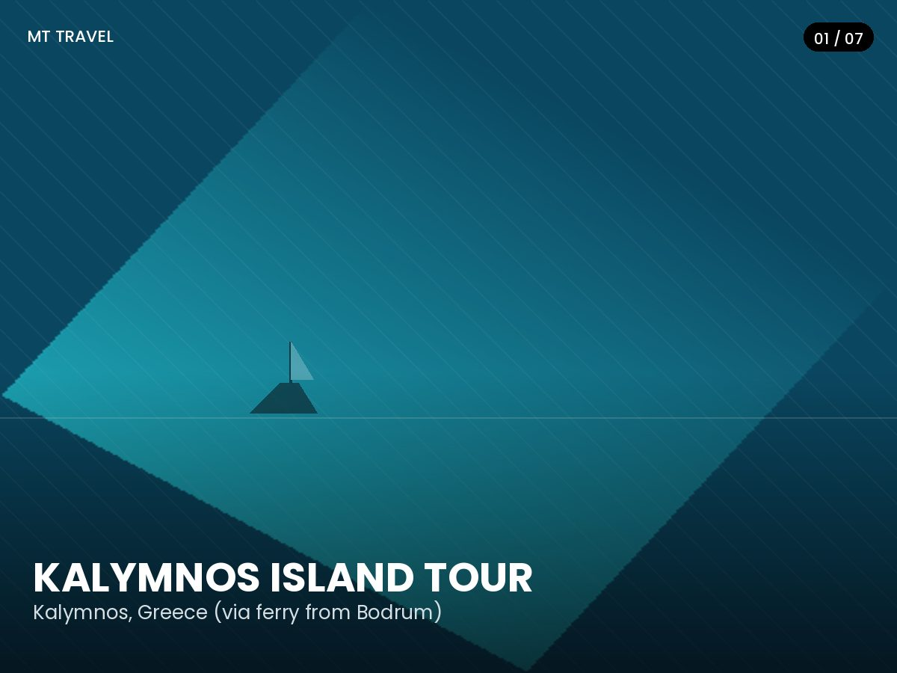

Kalymnos Adası Turu
Genel Bakış
Bir asırdan uzun süredir 'Sünger Dalgıçları Adası' olarak bilinen Kalymnos, servetini ve kimliğini Ege sünger ticareti üzerine kurmuştur - Pothia limanının çevresindeki atölyelerde süngerlerin hâlâ nasıl temizlenip satıldığını görebilirsiniz. Kasabanın üzerinde yükselen, Akdeniz'in en yüksek kireçtaşı kayalıklarından bazıları, adayı dünyaca ünlü bir kaya tırmanışı destinasyonu haline getirmiştir.
Kalymnos'un tadını çıkarmak için tırmanmanıza gerek yok elbette: bu tur size Pothia'nın neoklasik sahilinde dolaşmak, sünger ve takı dükkanlarını gezmek ve boğazın karşısındaki minik Telendos adacığına bakmak için serbest zaman tanır. Berrak, sakin koylarda yüzme molaları, büyük ada geçişlerinden gerçekten farklı hissettiren bir günü tamamlar.
Öne Çıkanlar
- Kalymnos'un ünlü kireçtaşı kayalıklarının altından feribot geçişi
- Pothia'da sünger atölyeleri ve gösterimleri
- Telendos adacığına bakan manzaralar
- Berrak kıyı koylarında serbest yüzme zamanı
- Neoklasik liman mimarisi
- Geçiş boyunca İngilizce konuşan rehber
Tur Programı
-
07:00
Otelden Alış
Bodrum yarımadasındaki otelinizden alınırsınız.
-
08:00
Feribotla Hareket
Kalymnos'a geçiş için Bodrum'dan gemiye binilir.
-
09:15
Pothia'ya Varış
Liman boyunca ve sünger atölyelerinde rehberli tanıtım yürüyüşü.
-
10:00
Serbest Zaman ve Yüzme
Kasabayı gezin, sünger alışverişi yapın ya da yakındaki bir koyda dinlenin.
-
16:30
Dönüş Yolculuğu
Dönüş feribotuna binilir, akşam saatlerinde Bodrum'a varılır.
Fiyata Dahil Olanlar
- Bodrum - Kalymnos gidiş-dönüş feribot bileti
- Otel alış ve bırakış hizmeti (Bodrum yarımadası)
- İngilizce konuşan tur rehberi
- Liman vergileri ve harçları
- Pothia'da tanıtım yürüyüşü
- Geçiş süresince seyahat sigortası
Fiyata Dahil Olmayanlar
- Adada öğle yemeği ve içecekler
- Kişisel harcamalar ve alışveriş
- Telendos adacığına tekne turu (isteğe bağlı, yerinde ödemeli)
- Bahşişler
Önemli Bilgiler
- Buluşma Noktası: Bodrum Uluslararası Feribot Terminali, Neyzen Tevfik Caddesi
- Kalkış Saati: 08:00
- Dönüş Saati: 17:00